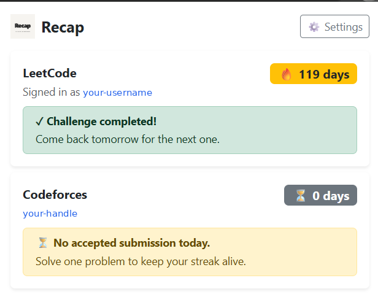

Recap: Never Miss the LeetCode Daily Challenge
Recap is a free, open-source Chrome extension that reminds you to solve the LeetCode Daily Challenge and shows whether you have completed it, right from your browser toolbar.

How to install Recap | Download latest release | View on GitHub
What is Recap?
Recap is built for LeetCode users who want to stay consistent. It checks today's Daily Challenge for you and nudges you with a notification until you have solved it.
Features
- Today's Daily Challenge with difficulty and topic tags.
- Completion status at a glance.
- Daily reminder notifications at the time you choose.
- Smart retries every 15, 30, 60 or 120 minutes until the challenge is solved.
- Streak tracking for LeetCode, plus Codeforces streak tracking.
- Settings page for reminder time, notifications and your Codeforces handle.
How Recap works
Recap reads your signed-in LeetCode session and queries the LeetCode GraphQL API. Reminders use Chrome alarms and notifications, with retries until the challenge is completed. Read the technical details.
Frequently asked questions
What does Recap do?
It reminds you to solve the LeetCode Daily Challenge and shows your completion status, difficulty, topics and streak.
Does Recap send LeetCode reminders?
Yes, through Chrome notifications at your chosen time, with retries until you solve the challenge.
Do I need a LeetCode account?
Yes. You must be signed in to LeetCode in Chrome to see status and streak.
Does Recap track Codeforces?
Yes. Add your Codeforces handle in settings to see your Codeforces streak.
Is Recap free and open source?
Yes. The source code is on GitHub.
How do I install Recap?
Follow the installation guide.
About Recap
Recap is an open-source project developed and maintained on GitHub. Read the privacy notes and the full FAQ.